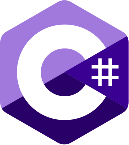

課題１
プログラム言語の人気ランキング,おすすめIDEの表を作成する
| 順位 | 言語 | シェア | 公式ドキュメント | ロゴ |
|---|---|---|---|---|
| 1 | Python | 31.02% | Python3.9.0 | |
| 2 | Java | 16.38% | Java11 | |
| 3 | Javascript | 8.41% | javascriptリファレンス | |
| 4 | C# | 6.52% | C#リファレンス |  |
| 5 | PHP | 5.38% | PHPマニュアル |
| No | 名前 | おすすめポイント |
|---|---|---|
| 1 | Visual Studio Code | 拡張機能が多く、 様々な言語を効率よく開発できる |
| 2 | Atom | GitHubがリリースしたテキストエディタ Gitとの親和性が高い |
| 3 | IntelliJ IDEA | JavaやScala,Typescriptといった言語での開発が可能 公式サイトやヘルプが日本語対応になっている |
| 4 | Eclipse | Javaに特化したIDE 様々な現場で使用されている |
課題２
問い合わせフォームを作成する